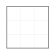

C235
There are 2 similar sequences in this cluster.
CGCT has 0 edits, 1 insert, and 0 deletes relative to the median sequence.

D235R has 0 edits, 0 inserts, and 0 deletes relative to the median sequence.
CGCT
CGCT appears in 10 plasmids under 2 names.
CGCT
pL0 T
D235R
D235R appears in 32 plasmids under 5 names.
3maj
D235R
Ligation
pL1 T2
WPRE